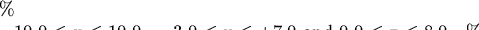

PLplot includes routines that will represent a single-valued function of two variables as a surface. In this section, we shall assume that the function to be plotted is Z[X][Y], where Z represents the dependent variable and X and Y represent the independent variables.
As usual, we would like to refer to a three dimensional point (X, Y, Z) in terms of some meaningful user-specified coordinate system. These are called three-dimensional world coordinates. We need to specify the ranges of these coordinates, so that the entire surface is contained within the cuboid defined by xmin<x<xmax, ymin<y<ymax and zmin<z<zmax. Typically, we shall want to view the surface from a variety of angles, and to facilitate this, a two-stage mapping of the enclosing cuboid is performed. Firstly, it is mapped into another cuboid called the normalized box whose size must also be specified by the user, and secondly this normalized box is viewed from a particular azimuth and elevation so that it can be projected onto the two-dimensional window.
This two-stage transformation process allows considerable flexibility in specifying how the surface is depicted. The lengths of the sides of the normalized box are independent of the world coordinate ranges of each of the variables, making it possible to use ``reasonable'' viewing angles even if the ranges of the world coordinates on the axes are very different. The size of the normalized box is determined essentially by the size of the two-dimensional window into which it is to be mapped. The normalized box is centered about the origin in the x and y directions, but rests on the plane z = 0. It is viewed by an observer located at altitude alt and azimuth az, where both angles are measured in degrees. The altitude should be restricted to the range zero to ninety degrees for proper operation, and represents the viewing angle above the xy plane. The azimuth is defined so that when az = 0, the observer sees the xz plane face on, and as the angle is increased, the observer moves clockwise around the box as viewed from above the xy plane. The azimuth can take on any value.
The first step in drawing a surface plot is to decide on the size of the two-dimensional window and the normalized box. For example, we could choose the normalized box to have sides of length
basex = 2.0;
basey = 4.0;
height = 3.0;


which fits into this coordinate range. A reasonable range for the y
coordinate of the two dimensional window in this case is -2.5 to +4, as
the the projection of the normalized box lies in this range for the
allowed range of viewing angles.
The routine plwind or plenv is used in the usual way to establish the size of the two-dimensional window. The routine plw3d must then be called to establish the range of the three dimensional world coordinates, the size of the normalized box and the viewing angles. After calling plw3d, the actual surface is drawn by a call to plot3d.
For example, if the three-dimensional world-coordinate ranges are


we could use the following statements:
xmin2d = -2.5;
xmax2d = 2.5;
ymin2d = -2.5;
ymax2d = 4.0;
plenv(xmin2d, xmax2d, ymin2d, ymax2d, 0, -2);
basex = 2.0;
basey = 4.0;
height = 3.0;
xmin = -10.0;
xmax = 10.0;
ymin = -3.0;
ymax = 7.0;
zmin = 0.0;
zmax = 8.0;
alt = 45.0;
az = 30.0;
side = 1;
plw3d(basex, basey, height, xmin, xmax, ymin, ymax, zmin, zmax, alt, az);
plot3d(x, y, z, nx, ny, opt, side);
The values of the function are stored in a two-dimensional array z[][] where the array element z[i][j] contains the value of the function at the point x_i, y_j. (The two-dimensional array z is a vectored array instead of a fixed size array. z points to an array of pointers which each point to a rwo of the matrix.) Note that the values of the independent variables x_i and y_j do not need to be equally spaced, but they must lie on a rectangular grid. Thus two further arrays x[nx] and y[ny] are required as arguments to plot3d to specify the values of the independent variables. The values in the arrays x and y must be strictly increasing with the index. The argument opt specifies how the surface is outlined. If opt = 1, a line is drawn representing z as a function of x for each value of y, if opt = 2, a line is drawn representing z as a function of y for each value of x, and if opt = 3, a net of lines is drawn. The first two options may be preferable if one of the independent variables is to be regarded as a parameter, whilst the third is better for getting an overall picture of the surface. If side is equal to one then sides are drawn on the figure so that the graph doesn't appear to float.
The routine plmesh is similar to plot3d, except that it is used for drawing mesh plots. Mesh plots allow you to see both the top and bottom sides of a surface mesh, while 3D plots allow you to see the top side only (like looking at a solid object). The side option is not available with plmesh.
Labelling a three-dimensional or mesh plot is somewhat more complicated than a two dimensional plot due to the need for skewing the characters in the label so that they are parallel to the coordinate axes. The routine plbox3 thus combines the functions of box drawing and labelling.
Contour plots, , 3-d Plots, Advanced Use